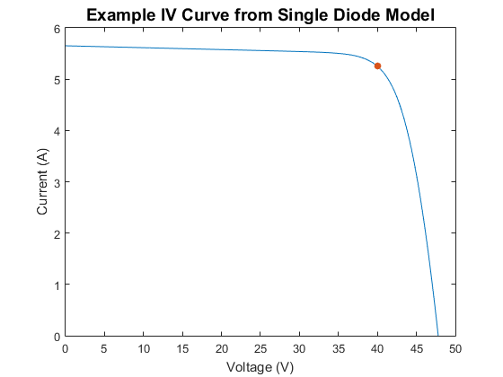

pvl_singlediode
Solve the single-diode equation to obtain a photovoltaic IV curve.
Contents
Syntax
[Result] = pvl_singlediode(IL, I0, Rs, Rsh, nNsVth)
[Result] = pvl_singlediode(IL, I0, Rs, Rsh, nNsVth, NumPoints)
Description
pvl_singlediode solves the single diode equation [1]:

for I and V when given IL, I0, Rs, Rsh, and nNsVth (nNsVth = n Ns Vth). The numerical solution uses a formulation [2] of the single diode equation in terms of the Lambert W function. pvl_singlediode returns a struct which contains the five points on the I-V curve specified in the Sandia Array Performance Model [3], and can optionally return vectors of I and V describing the full IV curve with a user-defined number of points. If IL, I0, Rs, Rsh, and nNsVth are scalars, a single IV curve will be returned; if any inputs are vectors (of the same length), multiple IV curves will be calculated.
Inputs
- IL - Light-generated current (photocurrent) in amperes under desired IV curve conditions. May be a scalar or vector, but vectors must be of same length as all other input vectors.
- I0 - Diode saturation current in amperes under desired IV curve conditions. May be a scalar or vector, but vectors must be of same length as all other input vectors.
- Rs - Series resistance in ohms under desired IV curve conditions. May be a scalar or vector, but vectors must be of same length as all other input vectors.
- Rsh - Shunt resistance in ohms under desired IV curve conditions. May be a scalar or vector, but vectors must be of same length as all other input vectors.
- nNsVth - the product of three components. 1) The usual diode ideal factor (n), 2) the number of cells in series (Ns), and 3) the cell thermal voltage under the desired IV curve conditions (Vth). The thermal voltage of the cell (in volts) may be calculated as Vth = k*Tcell/q, where k is Boltzmann's constant (J/K), Tcell is the temperature of the p-n junction in Kelvin, and q is the elementary charge of an electron (coulombs). nNsVth may be a scalar or vector, but vectors must be of same length as all other input vectors.
- NumPoints - Number of points in the desired IV curve. Must be a finite scalar value. Non-integer values will be rounded to the next highest integer (ceil). If NumPoints is >1, pvl_singlediode computes NumPoints points on the IV curve that are evenly spaced in voltage between 0 and Voc.
Output
- Result - A structure with the following fields. All fields have the same number of rows as the largest input vector.
- Result.Isc - Column vector of short circuit current in amperes.
- Result.Voc - Column vector of open circuit voltage in volts.
- Result.Imp - Column vector of current at maximum power point in amperes.
- Result.Vmp - Column vector of voltage at maximum power point in volts.
- Result.Pmp - Column vector of power at maximum power point in watts.
- Result.Ix - Column vector of current, in amperes, at V = 0.5*Voc.
- Result.Ixx - Column vector of current, in amperes, at V = 0.5*(Voc+Vmp).
- Result.V - Array of voltages in volts. Row n corresponds to IV curve n, with V=0 in the leftmost column and V=Voc in the rightmost column. Voltage points are equally spaced (in voltage) between 0 and Voc.
- Result.I - Array of currents in amperes. Row n corresponds to IV curve n, with I=Isc in the leftmost column and I=0 in the rightmost column.
Notes
- To plot the ith IV curve, use: plot(Result.V(i,:), Result.I(i,:))
- To plot all IV curves on the same plot: plot(Result.V', Result.I')
- Generating IV curves using NumPoints will slow down function operation.
Example
Example parameters for a typical 210 W c-Si module
IL = 5.658; %photocurrent (A) I0 = 4.629E-11; %dark current (A) Rsh = 269.68; %shunt resistance (ohms) Rs = .386; %series resistance (ohms) n = 1.0134; % ideality factor (diode factor) Ns = 72; %number of cells in series k = 1.3806488E-23; %Boltzman's constant in units of J/K Tcell = 25; %deg C q = 1.60217646E-19; %Electron charge in coulombs nVth = n*Ns*k*(Tcell+273.15)/q; NumPoints = 1000; [IVResult] = pvl_singlediode(IL, I0, Rs, Rsh, nVth, NumPoints); figure plot(IVResult.V,IVResult.I) hold on scatter(IVResult.Vmp,IVResult.Imp,'filled') xlabel('Voltage (V)') ylabel('Current (A)') title('Example IV Curve from Single Diode Model','FontSize',14) Pmax = IVResult.Pmp %Max Power of Module
Pmax = 210.0013
References:
[1] S.R. Wenham, M.A. Green, M.E. Watt, "Applied Photovoltaics" ISBN 0 86758 909 4
[2] A. Jain, A. Kapoor, 2004. Exact analytical solutions of the parameters of real solar cells using Lambert W-function, Solar Energy Materials and Solar Cells, 81 (2004) 269-277.
[3] D. King et al, "Sandia Photovoltaic Array Performance Model", SAND2004-3535, Sandia National Laboratories, Albuquerque, NM
See also
pvl_calcparams_desoto, pvl_calcparams_PVsyst, pvl_calcparams_CEC, pvl_lambertw, pvl_sapm.
Copyright 2014 Sandia National Laboratories